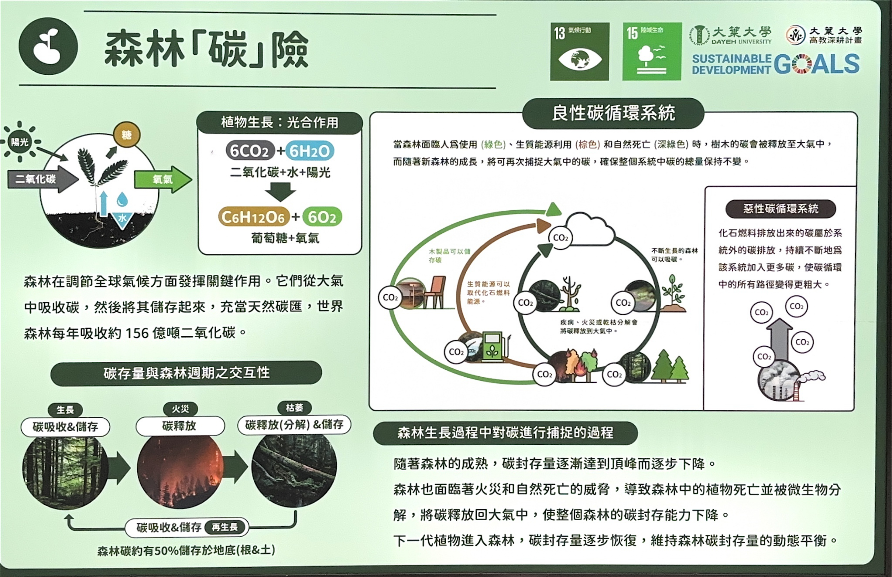

主要主題

森林碳險
探索植物如何通過光合作用吸收碳並釋放氧氣，參與碳循環。

根的類型與果實種子
了解根系的多樣性以及植物種子的傳播方式。

植物橫切面面觀
了植物的主要結構在橫切面上的組成，包括根、莖、葉和種子的橫切結構。

樹木的生長
這張圖片展示了樹木作為地球上最大的生物之一，其生長的過程與結構特徵。樹木的生長分為一次生長（延長生長）和二次生長（肥大生長）。

生藥與香草
了植物的主要結構在橫切面上的組成，包括根、莖、葉和種子的橫切結構。

莖與花的類型
了植物的主要結構在橫切面上的組成，包括根、莖、葉和種子的橫切結構。

葉子的各種型態
了植物的主要結構在橫切面上的組成，包括根、莖、葉和種子的橫切結構。